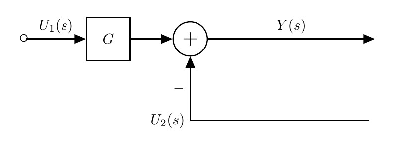

| Rule | Original Diagram | Equivalent Diagram | Equation |
| 1 | | \(y=G_1 G_2 u\) | |
| 2 | \( y= (G_1 \pm G_2) u\) | ||
| 3 | \(y=G_1(u \pm G_2 y)\) |
| Manipulation | Original Diagram | Equivalent Diagram | Equation |
| 1 |  | \(Y(s)=G_1(s) U_1(s)-U_2(s)\) | |
| 2 |  | \(Y(s)=G(s)(U_1(s)-U_2(s))\) | |
| 3 | \(Y(s)=G(s)U(s)\) | ||
| 4 | \(Y(s)=G(s)U(s)\) | ||
| 5 |  |  | \(Y(s)=(G_1(s)-G_2(s))U(s)\) |
| 6 | \(Y(s)=G_1(s)U(s) - U(s)\) | ||
| 7 | \(Y(s) = \displaystyle\frac{G(s)U(s)}{1+G(s)H(s)}\) | ||
| 8 | \(Y(s) = \displaystyle\frac{G_1(s)U(s)}{1+G(s)}\) | ||
| 9 | \(Y(s)=U_1(s)-U_2(s)-U_3(s)\) | ||
| 10 | \(Y(s)=U_1(s)-U_2(s)+U_3(s)\) | ||
| 11 | \(Y(s)=U_1(s)-U_2(s)\) | ||
| 12 | \(Y(s)=U_1(s)-U_2(s)\) |
 step 2
step 2